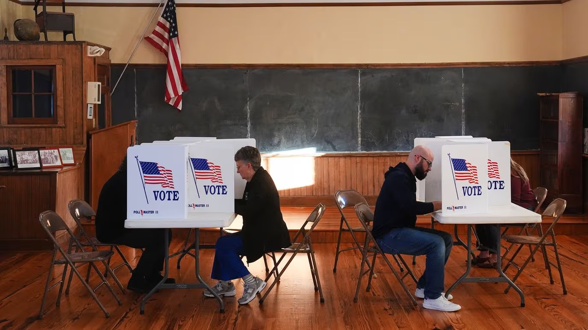

Imagen: Charlie Riedel/AP Photo
“La verdadera razón por la que perdimos es evidente para casi todo el mundo”, escribió Vance, el vicepresidente de EE. UU., en X. “La razón por la que perdimos es la guerra”. Esta declaración, que en realidad representa cómo piensa una gran parte de la población estadounidense, quizás no captura la complejidad del voto por los demócratas. Es verdad que la guerra es uno de los factores principales para entender el voto, pero hay otros relacionados con la inflación y el costo de vida, así como factores que, desde antes de que iniciara la ofensiva contra Irán, ocasionaban que un 60% de los votantes independientes considerara que Trump tenía sus prioridades equivocadas. La alta desaprobación de su gestión crece con la guerra, pero no comienza con ella. Vance, no obstante, lo sabe muy bien. Así que la elección de sus palabras es intencional y pretende enviar un mensaje que siente que ha sido desoído: que Trump sea leal a su base y deje de involucrarse en guerras percibidas como lejanas, interminables y costosas.
El tema es que ello enfrenta a Trump, una vez más, ante un dilema que le quita el sueño: America First o Peace Through Strength; sostener una política aislacionista y transaccional, al estilo de su primera gestión, o usar el poder, la fuerza y la determinación de la superpotencia, elementos fundamentales para un presidente cuyo estilo se basa en tácticas de miedo y presión máxima.
Así que el resultado de las elecciones, en términos de política exterior de Washington, no solo debe analizarse a partir del contrapeso que ahora pueda ejercer el Legislativo (eso pudo lograrse con una derrota republicana mucho más pequeña), sino también por el impacto del tsunami azul en la debilidad percibida de Trump y, por tanto, en el déficit que esto le genera para ejercer presión sobre sus contrapartes mediante la proyección de fuerza y determinación. Esto último, por sí solo, tendrá múltiples consecuencias internacionales, no solo por las percepciones que se producirán entre aliados y rivales de EE. UU., sino por el continuo esfuerzo de Trump—que no parará—para revertirlas. Unas notas al respecto:
La contradicción
1. Trump se ve enfrentado continuamente a una contradicción intrínseca a su personalidad y a su lectura de la historia de su país. Por un lado, considera genuinamente que EE. UU. no tendría que involucrarse en guerras interminables, guerras que son de “otros” y que Washington debe financiar para resolver problemas que no son suyos. Por el otro, sus tácticas de presión y negociación dependen de esa proyección de fuerza, determinación y credibilidad, tanto en el ámbito político y militar como en el económico y comercial.
2. Su forma de resolver esa contradicción durante su gestión previa, e incluso durante parte de la actual, consistía en demostrar su determinación a usar la fuerza y lanzar golpes fulminantes y severos contra sus enemigos, pero procurando que fueran de muy corta duración y permitieran estrategias de desescalada muy veloces.
3. El problema con la ofensiva contra Irán es que esa estrategia fracasa. Originalmente, él buscaba una operación relámpago y efectiva, que eliminara al líder supremo, el ayatola Alí Khamenei, y a todo su círculo, y que desembocara en algo similar a lo ocurrido en Venezuela. Sin embargo, el régimen sobrevive, resiste y encuentra formas de combatir a Washington y sus aliados.
4. Esto lo mete en una trampa de la que no puede salir. Negociar con Teherán bajo los términos que busca el régimen lo muestra débil. Pero escalar la guerra, en lugar de acercarlo a sus objetivos, resulta incluso más costoso ante las tácticas asimétricas de Irán y lo envuelve indefinidamente en una espiral escalatoria.
5. Hay que recordar que él ya buscó salir de esa trampa mediante un acuerdo de cese al fuego que fue percibido como altamente favorable para Irán. La cuestión es que quienes quedaron a cargo del régimen en Teherán, sumidos en la desconfianza tras el asesinato del ayatola, todavía se autoperciben con la capacidad de extraer incluso más concesiones de Washington.
Añadiendo el componente de las elecciones en EE. UU.
1. La victoria demócrata estaba ya descontada en Washington. Lo que no sabíamos era la dimensión de esa victoria.
2. Hasta antes de conocer los resultados, el análisis en términos de política exterior consistía en revisar de qué formas la Cámara de Representantes o, si acaso, un Senado demócrata, podían ejercer un contrapeso eficaz a la política exterior de Trump. La guerra en Irán es uno de los casos más analizados. Otros abarcan la política estadounidense hacia Israel y otros países de la región, Ucrania, Rusia y China, así como los aranceles, entre muchos más.
3. Pero para que esos efectos se produjeran, la victoria demócrata pudo haber sido mucho más pequeña. Y eso no fue lo que pasó. La contundencia de la derrota republicana, percibida como el costo que ha tenido que pagar ese partido por las políticas de Trump y por haber facilitado su implementación, es brutal. Inesperada por su dimensión y monumental en términos de sus efectos psicológicos y políticos.
4. El análisis, por tanto, ya no puede limitarse al contrapeso que puedan ejercer las cámaras sobre la política exterior de Washington, sino que debe considerar cómo está siendo percibido Trump en este momento en todas partes del globo.
5. Esto, naturalmente, le resta poder de negociación comercial con muchos de sus socios y adversarios, pero también poder diplomático, político y disuasivo en el ámbito militar.
6. Es decir, en todas partes del globo, Washington ya había sido percibido como debilitado tras su ofensiva contra Irán. Esto, por factores como el agotamiento de su arsenal, su vulnerabilidad ante las tácticas asimétricas de Teherán y los efectos psicológicos, simbólicos, financieros, económicos y políticos de una estrategia que exhibió la intolerancia de EE. UU. a sostener y escalar el conflicto si ello era requerido. Pero ahora, un componente explosivo adicional puede ser la debilidad política interna que Trump proyecta hacia afuera. Las declaraciones de Vance son una muestra de lo que esto implica: un señalamiento claro de algo que él, en sintonía con la propia base de Trump, había advertido: terminen ya la guerra de una vez por todas.
El dilema (trilema) de Trump con Irán: implicaciones para otras regiones
1. Trump tiene que enfrentar una de estas tres malas opciones para esa guerra:
(a) Conservar el actual statu quo, manteniendo el bloqueo y la presión económica sobre Irán, con la esperanza de que eventualmente Teherán se quiebre. Pero esa estrategia mantiene los precios de la energía demasiado elevados e implica que Washington deba permanecer indefinidamente protegiendo el estrecho de Ormuz, con costos logísticos y operativos difíciles de sostener, sin que ello asegure que Teherán cederá. Además, el riesgo de escalamiento persiste.
(b) Escalar, buscando una nueva operación fulminante, pero quizás acotada en el tiempo. El riesgo es que produciría nuevas respuestas asimétricas de Teherán, con altísimos costos para los países de la región y probablemente para la economía global, después de los golpes que ya ha sufrido. Si Teherán considera que puede resistir una nueva embestida durante varias semanas o meses, probablemente veremos un capítulo similar a los anteriores, incluso si Washington decide utilizar parte de su armamento más poderoso contra Irán. Esto podría resultar en una espiral mayor que, en un caso extremo, podría forzar a EE. UU. a considerar operaciones terrestres en distintos grados.
(c) Una nueva negociación, pero cediendo al menos en varios de los términos que Irán busca imponer.
2. Los poderes del Congreso para forzar a Trump a alguna de esas decisiones son limitados y seguramente el presidente ejercerá sus amplias facultades ejecutivas para elegir el camino. La cuestión es que, bajo el nuevo contexto de debilidad que proyecta tras los resultados electorales, si decide negociar con Irán, su posición negociadora está incluso más golpeada que en junio. Y, sin embargo, una nueva escalada lo enfrentaría como nunca con su propia sociedad, especialmente con una base que ahora, en la voz de Vance, le arroja la derrota republicana en la cara por su guerra de elección.
3. Por último, esto no significa que Trump necesariamente evitará una nueva escalada con Teherán. De hecho, tratando de pensar como él, la debilidad que proyecta su nueva situación juega en contra de todos sus intereses y de sus decenas de frentes de negociación abiertos. Lo que necesita es cambiar velozmente esa imagen de pato cojo, golpeado y caído. La política exterior le ofrece muchas herramientas para ello. Irán sigue siendo una de ellas, pero hay otras, por ejemplo, en América Latina. Por tanto, incluso si ello lo enfrenta con el nuevo Congreso o con su propia base, debemos esperar a un Trump rebelde y confrontativo.
CIPMEX · Centro de Investigación para la Paz México, A.C. · Paz que se piensa, paz que se construye